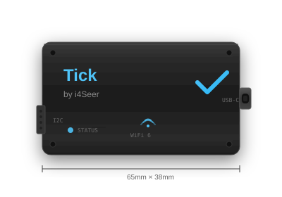
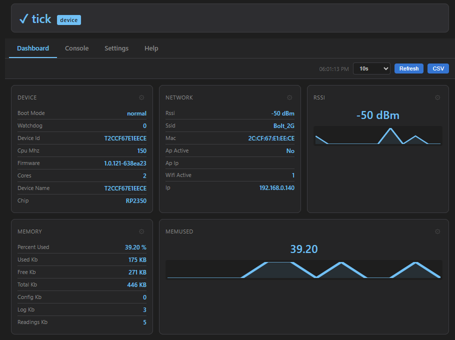
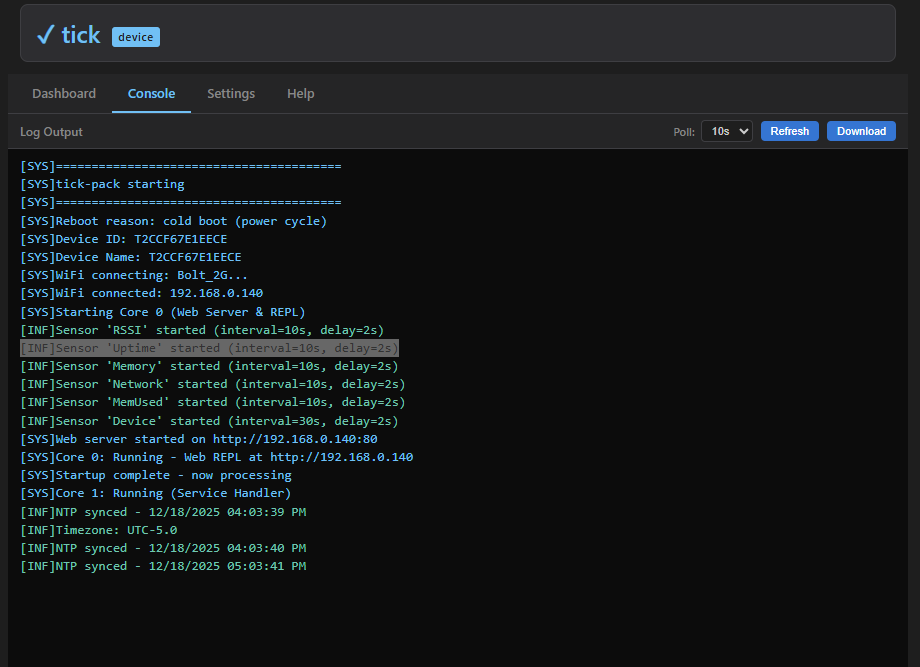
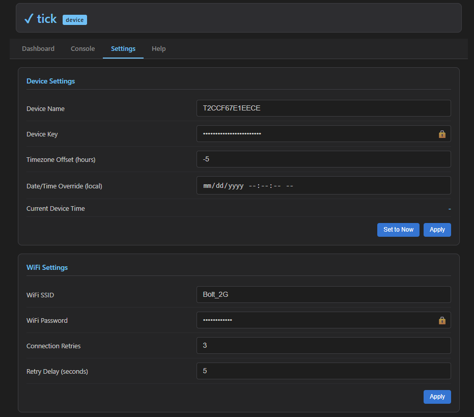

Make every tick count. Automated tracking of events, cycles, and pulses—replacing manual tracking with real-time data that drives smarter decisions.
Traditional methods create bottlenecks that cost time and money
Manual cycle counts force staff to stop regular tasks. In high-volume environments, this creates constant workflow disruptions.
Fatigue, distraction, and simple mistakes lead to miscounts. Even small errors compound across thousands of items.
Manual counts provide snapshots, not live data. By the time you have numbers, they're already outdated.
Labor hours, stockouts, overstocking, and shrinkage from poor visibility add up to significant losses over time.
Paper logs and manual records create audit vulnerabilities. Missing or inconsistent documentation puts certifications at risk.
Without continuous monitoring, you only see snapshots. Patterns, trends, and anomalies go undetected until problems escalate.
Automated sensing creates significant operational improvements with minimal complexity
Sensors work in the background while staff focus on value-added tasks. Faster cycle counts without interrupting operations.
Continuous monitoring eliminates errors common in manual systems. Data syncs instantly with your management systems.
Reduce labor needs, prevent losses from miscounts, and avoid stockouts or overstocking. ROI that compounds over time.
Automated notifications when stock runs low, thresholds are crossed, or anomalies are detected. Act before problems escalate.
Holistic views of operations, from supply chain movement to internal asset status. See the full picture for better management.
Continuous tracking improves accountability and reduces shrinkage from theft, damage, or errors.
From warehouses to factories to utilities—anywhere activity needs tracking
Simplify cycle counts in your WMS. Track units through receiving, storage, and shipping with real-time visibility that eliminates manual audits.
Track machine cycles for maintenance scheduling. Monitor production counts per shift. Detect slowdowns instantly.
Monitor items shipped, received, or in transit. Automated manifests. Proof of delivery without paperwork.
Count power pulses to manage consumption. Monitor pump cycles, valve operations, or meter readings remotely.
Track temperature, humidity, air quality, and pressure changes. Monitor HVAC performance, detect anomalies, and ensure compliance logging.
Monitor usage cycles for any equipment. Know when maintenance is due based on actual use, not calendar time.
The hardware that makes it happen

Enterprise-ready sensor platform designed for reliability and ease of deployment
WiFi 6 for facilities, LTE cellular for remote sites, or LoRa for long-range low-power deployments. Choose the right link for your environment.
4-pin I2C connector supports hundreds of compatible sensors. Temperature, humidity, pressure, air quality, and more.
Built-in Twin API support for Azure cloud connectivity. Real-time data sync, remote commands, and fleet management.
No app required. Access the dashboard, console, and settings directly from any browser on your network.
Over-the-air firmware updates keep your devices current. Deploy updates across your entire fleet remotely.
Black anodized aluminum enclosure with mounting holes. Designed for 24/7 operation in commercial environments.
Intuitive dashboard accessible from any browser

Monitor all sensor readings at a glance with customizable widgets, sparklines, and historical data.

View live logs, send commands, and debug your device directly from the browser interface.

Add sensors, configure services, manage WiFi settings, and update firmware—all from the web UI.
Everything you need to get started
Additional sensors and expansion modules available at extra cost.
Volume discounts available for orders of 10+ units.
Custom firmware development available on request.
Beyond the hardware—full IoT solutions
Need specific functionality? We develop custom firmware tailored to your exact requirements and sensor configurations.
Custom enclosures, connector configurations, or entirely new sensor platforms designed for your application.
Connect your devices to your existing systems. Azure, AWS, or custom backends—we make the data flow.
Not sure where to start? We help you design the right IoT strategy for your operational challenges.
Hands-on onboarding, documentation, and ongoing technical support. Get your team up to speed quickly.
Start small with a proof-of-concept deployment. Validate ROI and refine requirements before full rollout.
The name says it all
Seer means to foresee. At i4Seer, we build IoT systems that use data, connectivity, and intelligence to predict issues before they happen, monitor conditions in real-time, and optimize performance across industrial and commercial operations.
From counting cycles to tracking environmental conditions, our sensors give you the foresight to act before problems escalate.
Ready to turn activity into insight? Have questions about Tick or our services?
hello@i4seer.com